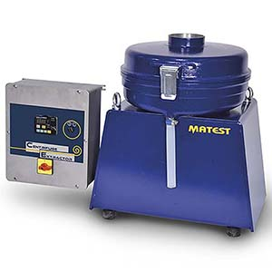
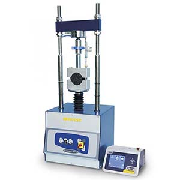
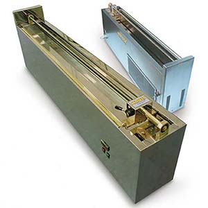
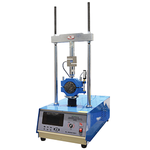
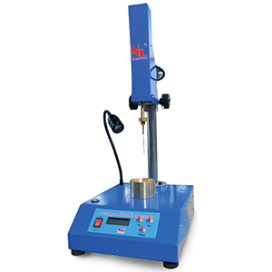
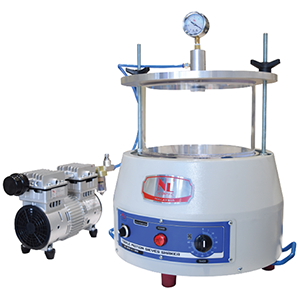
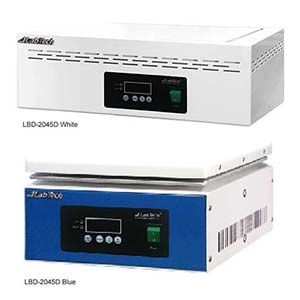
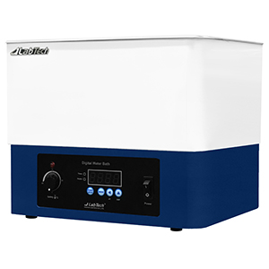

We provide comprehensive asphalt and bitumen testing equipment to ensure the quality and performance of road construction materials. Our equipment meets international standards for testing bituminous materials and asphalt mixtures.

B011
Centrifuge Extractor
Standard: ASTM D2172, AASHTO T164A, EN 12697-1
Used for the determination of bitumen percentage in bituminous mixtures. It consists of a removable, precision machined aluminium rotor bowl, placed into a cylindrical aluminium box.

B043 KIT
Digital Marshall Tester 50kN Capacity
Standards: EN 12697-34, 12697-23, 12697-12 ASTM D6927, D5581, D1559 | AASHTO T245 BS 598107 | NF P98-251-2
In this testing frame, the load is measured by an electric cell 50 kN capacity with high precision strain transducers; the flow is measured by an electronic displacement transducer 50 mm stroke and ± 0.1% linearity.

B055
Ductilometer with Cooling System
Standards: EN 13398, EN 13589 | ASTM D113, D6084 | AASHTO T51
Used to determine the bituminous ductility, that is the distance to which a briquette of molten bitumen can be extended under controlled conditions, before breaking. Equipped with incorporated refrigerating unit for tests with water temperature from + 5° to + 25°C.

NL 2010X / 007
Automatic Marshall Stability Compression Tester 50kN
Standard: ASTM D1559, D5581, AASHTO T245
Automatic Marshall stability compression tester with 50kN capacity for comprehensive testing of asphalt mixtures and quality control applications.

NL 2001X / 005
Advance Digital Penetrometer
Standard: ASTM D5, EN1426, AASHTO T49
Determine the consistency of sample from the depth penetration thru penetration needle under standard load condition.

NL 2007X / 002
Vacuum Pycnometer 10 Litres
Standard: EN 12697-5, EN 13108, ASTM D2041, AASHTO T209 & T283
Used for determining the theoretical maximum specific gravity of uncompacted bituminous paving mixtures. It can also be used for the calculation of the percent air voids in compacted bituminous mixtures & the amount of bitumen absorbed by the aggregates.

LBD-2045D
HOTPLATE
Features: High Density Ceramic Coating & Temperature Control
High density ceramic coated stainless steel top plate for excellent chemical resistance. High class powder coated aluminium casting body for excellent hear and corrosion resistance. A heater that is durable and excellent in heat transfer is equipped.

LWB-111D
Waterbath
Features: Stainless Steel Construction & Auto Tuning
Durable to use in many fields for general purpose. Seamless stainless-steel bath for excellent corrosion resistance and easy cleaning. Heater cover is provided to protect the heater and sensor from unexpected damage. Temp. auto tuning function available
Our Services Include:
- Supply of asphalt and bitumen testing equipment
- Calibration and verification services
- Equipment maintenance and repair
- Technical support and training